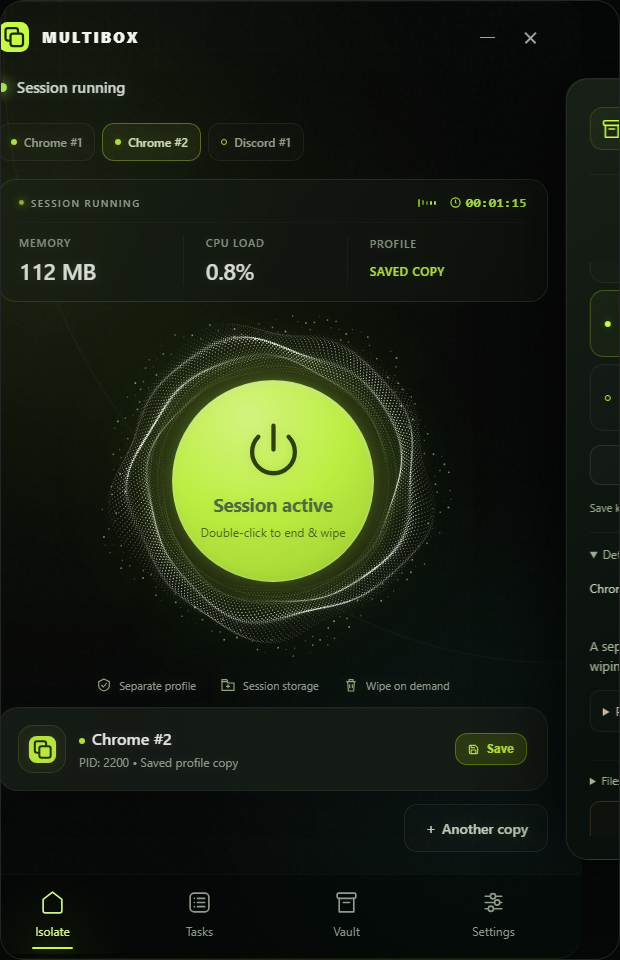
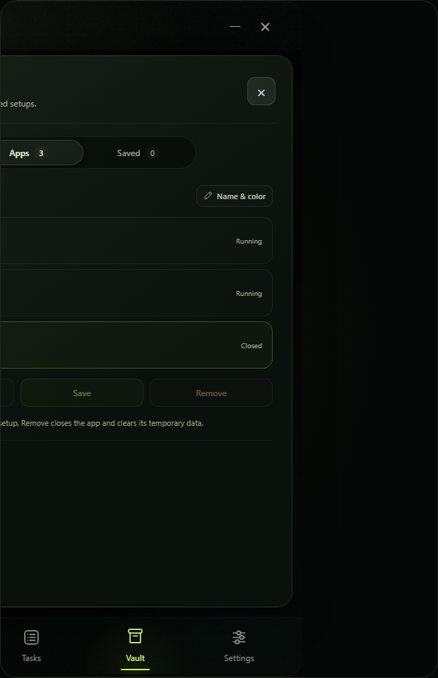

<!doctype html>
<html lang="en">
<meta charset="utf-8"><meta name="viewport" content="width=device-width,initial-scale=1">
<title>MultiBox · Independent sessions</title>
<style>
*{box-sizing:border-box}body{margin:0;padding:28px 32px;background:radial-gradient(ellipse at 50% 100%,#1a2812,transparent 70%),#080c0a;color:#e9efe6;font:14px 'Segoe UI',sans-serif}header{display:flex;justify-content:space-between;align-items:center;margin-bottom:23px}h1{display:flex;align-items:center;gap:12px;font-size:20px;font-weight:600;letter-spacing:-.5px;margin:0}h1 img{width:32px;height:32px}header p{color:#91a08e;font-size:12px;margin:0}main{display:grid;grid-template-columns:repeat(3,minmax(0,1fr));gap:30px}figure{margin:0}figcaption{color:#a0b38f;font-size:10px;letter-spacing:1.8px;margin-bottom:12px}figure img{display:block;width:100%;border-radius:18px;box-shadow:0 18px 40px #0005}footer{margin-top:20px;color:#7d9070;font-size:11px}@media(max-width:800px){header p{display:none}main{gap:12px}}
</style>
<header><h1>MultiBox / More apps. Their own space.</h1><p>Separate vaults · fresh copies · one reactor</p></header>
<main>
<figure><figcaption>01 · CHROME #1 / FRESH PROFILE</figcaption></figure>
<figure><figcaption>02 · CHROME #2 / SAVED COPY</figcaption></figure>
<figure><figcaption>03 · VAULT / SELECT A SESSION</figcaption></figure>
</main>
<footer>UI preview uses sample telemetry. Native integration tests verify independent process groups, fresh profiles, restore and targeted cleanup with local test apps.</footer>
</html>
